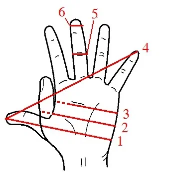

Нет, на один аршин нельзя творенья мерить,
Хоть будь они о двух иль четырех ногах.
Нет, милый краснобай, тебе нас не уверить,
Как там ни горячись в напыщенных словах,
Что наша матушка-природа коммунистка:
Нет, есть и у нее свой выбор и очистка.
Единство видим в ней, но равенства в ней нет.
Таков был искони, и есть, и будет свет.
П. А. Вяземский. Из старой записной книжки. "Русск. арх." 1876 г. 10
В прошлый раз мы упоминали сохранившиеся североитальянские ордонансы (decretti), которые донесли до нас первые точные цифры размеров галер того времени. Все известные нам трактаты по галеростроению более позднего времени (начиная с XV века), превращавшие директивы декретов в инструкции для корабельных плотников, базируются на этих цифрах.
Одним из самых первых трактатов по галеростроению являлся «Fabrica di galere», мы упоминали о нем ранее. Это по сути дела сборник инструкций для кораблестроителей, изданных в разное время (самая старая, как считается, относится к 1410 году), и охватывающих все этапы работ на корабельных верфях Венеции того времени. У. Алерц, проанализировав стиль этих инструкций, установил, что написаны они ритмической прозой, размер даже определил – семистопный анапест. Алерц считает, что корабельный мастер читал нараспев эти инструкции во время работы своим помощникам и ученикам, чтобы те лучше запомнили всю последовательность выполняемых действий и названия конструкций строящейся галеры. Лирические по форме, эти инструкции были основаны на точных правилах и цифрах, которыми определялось кораблестроительное ремесло в Венеции.
Венецианские меры отличались от многих других, они были больше приспособлены к нуждам кораблестроения и морской торговли. Но прежде чем говорить о венецианских мерах длины, необходимо сказать несколько слов об единицах измерения, основанных на естественном эталоне – ладони руки человека. Мы отложили ее в самый конец обсуждения системы антропоморфных единиц длины, учитывая сложность и многообразие вариантов этих единиц. При обсуждении будем использовать схему, которую я взял из Википедии.

Итак,
перст (палец), на схеме №6
– англ. – digit. В словаре S. Johnson A Dictionary of the English language. vol. I (London, 1785): «DI'GIT. n. f. [digitus, Latin.] The measure of length containing three fourths of an inch.» – «Мера длины, содержащая ¾ дюйма» (или 19,05 мм). Вообще же в совершенно замечательной книге итальянца Angelo MARTINI «Manuale di metrologia ossia misure, pesi e monete in uso attualmente e anticamente presso tutti i popoli» Torino, Loescher, 1883, на страницах 301-302, посвященных старинным мерам Англии, практически отсутствуют единицы, связанные с размерами пальца (кроме дюйма, естественно). Зато есть такая единица, как nail ноготь. Правда, к длине ногтя эта величина вряд ли имеет отношение. Вот что пишет о ней упомянутый выше S. Johnson в своем словаре: “A measure of length ; two inches and a quarter.” А это значит равен он 57,1 мм. Хорош коготок. Скорее, конечно, это не «ноготь», а «гвоздь». Вот что мы читаем у Бэкона:
“For the body of ships, no nation doth equal England, nor for the oaken timber to build them ; and we need not borrow iron for spikes or nails, to fasten them together”
«В изготовление корпусов кораблей никакая страна не может сравниться с Англией: это же касается и дубового леса для их постройки; и мы не должны жалеть железа для гвоздей и нагелей для их крепежа.»
Гвоздь или нагель длиной в 6 см, в отличие от ногтя, – это нормально.
– фр. – doigt; Впрочем, эта единица также не включена в общую системы старых французских мер, как и у англичан. Встречается она, как правило, в неопределенных выражениях, типа Un doigt de vin, небольшое количество вина на дне бокала, как у нас говорят: «Плесни символически».
– греч. – δάκτῠλος - дактиль (наименьшая мера длины у греков, равная 19.3 мм. Вот пара примеров ее употребления:
ἐν τῷ δήμῳ τῷ Παιανιέι ἦν γυνὴ τῇ οὔνομα ἦν Φύη, μέγαθος ἀπὸ τεσσέρων πηχέων ἀπολείπουσα τρεῖς δακτύλους καὶ ἄλλως εὐειδής:
Геродот, История, 1.60.
«В Пеонийском доме жила женщина по имени Фия ростом в 4 локтя без трех пальцев и вообще весьма пригожая»
(Перевод, вообще говоря, двусмысленный. Пригожая женщина без трех пальцев… Впрочем, канонический перевод этого места на английский выглядит еще более спорным: «…a woman called Phya, three fingers short of six feet, four inches in height». Здесь никакой связи с греческими мерами длины, все переведено в имперскую систему.)
И второй пример, тоже из Геродота:
τάφρος μὲν πρῶτά μιν βαθέα τε καὶ εὐρέα καὶ πλέη ὕδατος περιθέει, μετὰ δὲ τεῖχος πεντήκοντα μὲν πηχέων βασιληίων ἐὸν τὸ εὖρος, ὕψος δὲ διηκοσίων πηχέων: ὁ δὲ βασιλήιος πῆχυς τοῦ μετρίου ἐστὶ πήχεος μέζων τρισὶ δακτύλοισι
Геродот, История, 1.178.
«Прежде всего город окружен глубоким, широким и полным водой рвом, затем идет стена шириной в 50 царских локтей, а высотой в 200. Царский же локоть на 3 пальца больше обыкновенного».
(Здесь мы получаем ценную информацию о двух видах локтя (пехия) у греков: πῆχυς μέτριος (метрический локоть), который содержал 24 дактиля, и πῆχυς βασιλήϊος (царский локоть), равный 27 дактилям. Разница, о которой пишет Геродот, как раз и составляет три перста (дактиля)).
– лат. digitus мера длины = 18,5 мм (встречается также ее название римский дюйм. Она составляет одну шестнадцатую римского фута, pes). Вот пример ее употребления в классической литературе:
Huc teretes stipites feminis crassitudine ab summo praeacuti et praeusti demittebantur, ita ut non amplius digitis quattuor ex terra eminerent…
Цезарь, «Записки о галльской войне», кн.7, 73.6.
«В них опускались гладкие стволы толщиной в человеческое бедро, заостренные и обожженные сверху и выдававшиеся над поверхностью не более чем на четыре дюйма.»
Палец (на схеме №5). Единица длины, равная ширине пальца между его второй и третьей фалангами.
Равен обычно семи восьмым дюйма, или 22,225 мм.
- англ. finger или fingerbreadth.
Единица также внесистемная, и не всегда понятно, чем она отличается от только что нами рассмотренной выше. Рассмотрим такой пример.
Мне очень нравится отрывок из 12-й сатиры Ювенала, где говорится о тонкой границе, отделяющей человека на корабле от смерти, тонкой в буквальном смысле, так как определяется она толщиной борта. Вот как это звучит в переводе Ф.А. Петровского:
Большую часть самых нужных вещей побросал он, и все же
Легче не стало; тогда он доходит, теснимый нуждою,
Вплоть до того, что, схвативши топор, подрубает и мачту, —
В этом спасенье его: при опасности крайней мы ищем
Средства защиты, корабль облегчая насколько возможно.
Вот и доверь свою жизнь ветрам, полагаясь на мачту
Да на борта: ты от смерти далек на четыре иль на семь
Пальцев, и то лишь тогда, если очень толсты эти доски.
Если мы возьмем первоисточник, то относящаяся к единице длины часть выглядит следующим образом:
I nunc,et ventis animam committe, dolato
Confisus ligno,digitis a morte remotus
Quatuor,aut septem, si sit latissima tæda.
Мы без труда находим здесь знакомую уже нам единицу: digitus.
И в английском переводе снова употреблено слово finger:
Go now, go trust the wind's uncertain breath,
Removed four fingers from approaching death,
Or seven at most, when thickest is the board.
Т.е. в обыденной речи разницы между первой и второй из рассматриваемых нами единиц не существовало.
Небольшое примечание к английскому переводу. Сэмюэл Джонсон, авторитетный английский филолог и лексикограф, относит этот перевод Ювенала на счет Джона Драйдена. Однако в первоисточнике мне удалось установить, что перевел эту сатиру не Драйден, а Томас Пауэр. Бывают такие вот накладки и у больших авторитетов.
Вернемся к нашему маленькому рассказу в следующий раз.